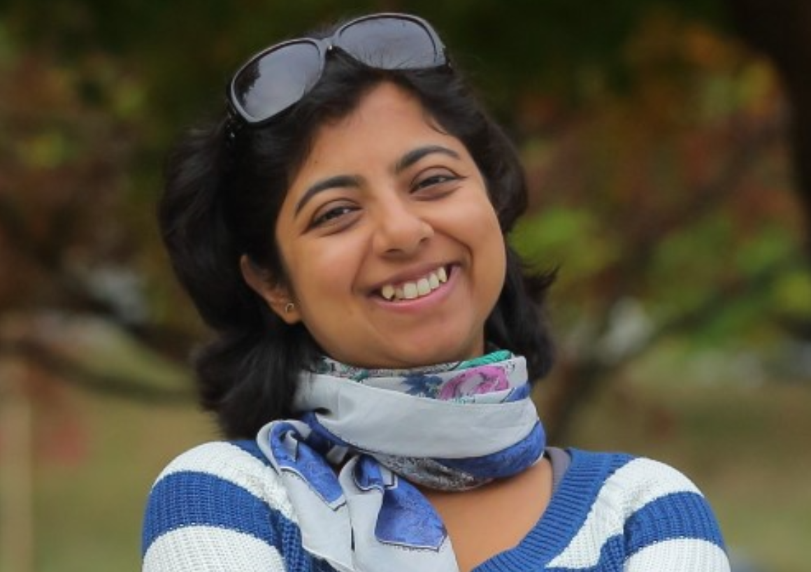

About Subarna

I am a computer vision researcher at Intel AI Lab since May 2018.
I received my PhD in Electrical and Computer Engineering from University of California San Diego. My PhD advisors were
Professor Truong Nguyen and
Professor Serge Belongie.
I am an alumna of both
Video processing group at UC San Diego and
SE(3) computer vision group at Cornell Tech.
My research interests include computer vison and video processing.
I worked in
STMicroelectronics in its Advanced System Technology (AST) group for over 6 years on computer vision and video processing domains. Prior to that I worked in
Interra Systems on video analyzer.
I earned my MS Research from Indian Institute of Technology, Delhi
and a Bachelor of Technology (Computer Science and Engineering) from Kalyani Govt. Enginnering College. I am from Kalyani, a beautiful town in West Bengal, India.
When I get a chance or time, I listen to music and sing.